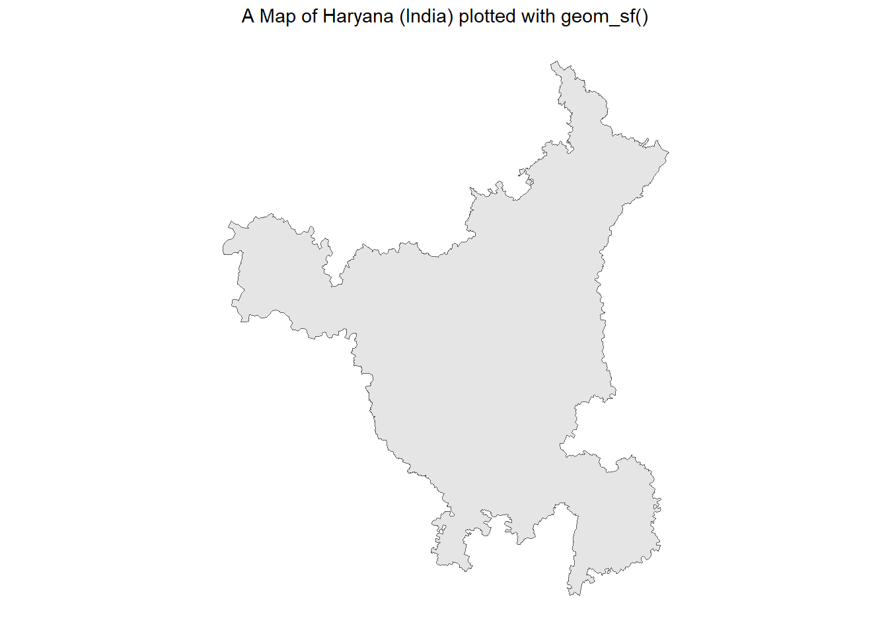
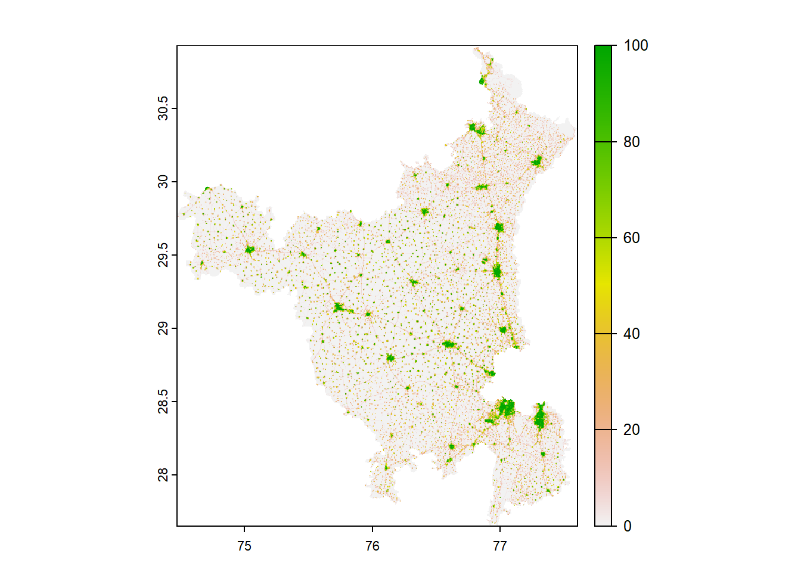
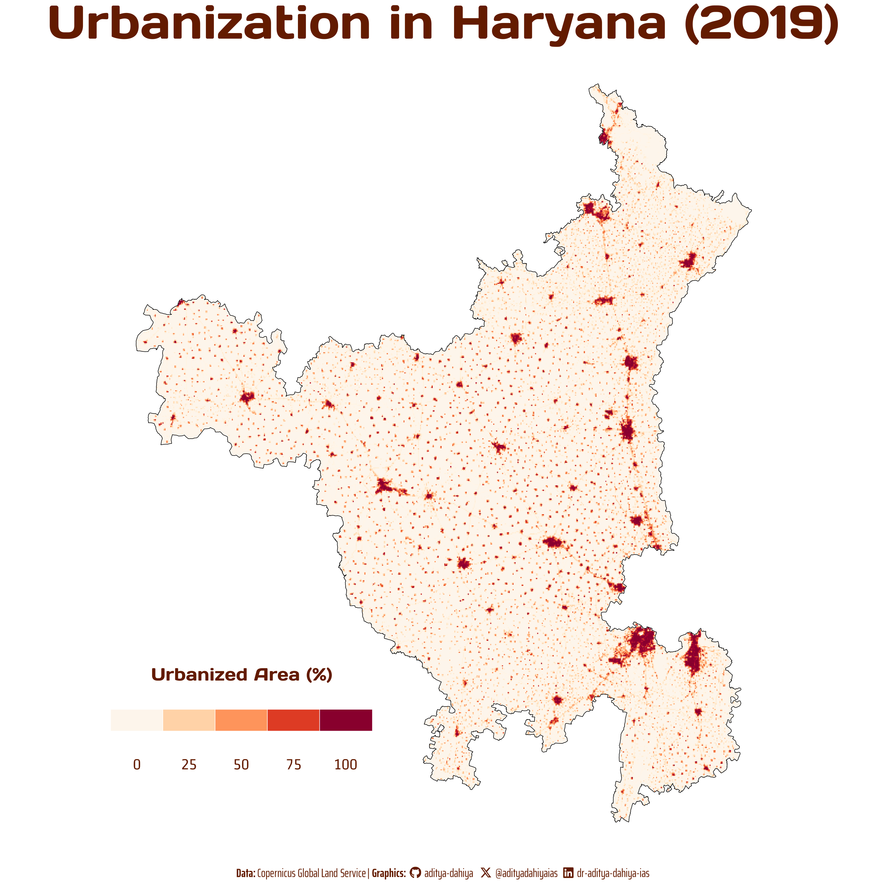

# Plotting the plain map of Haryanaggplot(haryana_borders |>st_simplify(dTolerance =100)) +geom_sf() + ggthemes::theme_map() +labs(title ="A Map of Haryana (India) plotted with geom_sf()") +theme(plot.title =element_text(hjust =0.5))

Figure 1: Using sf package to obtain, transform and plot a Map of Haryana (India). The map is plotted with geom_sf()
Obtaining Urban Cover Data
Credits for this data goes to Copernicus Global Land Service which provides bio-geophysical products of global land surface. Using this code we get a raster file.
Code
# Obtaining the official data from# https://lcviewer.vito.be/download# A fixed initial part of the URL for datastart_url <-"https://s3-eu-west-1.amazonaws.com/vito.landcover.global/v3.0.1/2015/E060N40/E060N40_PROBAV_LC100_global_v3.0.1_"# Variable part: Each yearvar_url <-2015:2019# Fixed part of the end of the URLend <-"-nrt_BuiltUp-CoverFraction-layer_EPSG-4326.tif"urls <-paste0(start_url, var_url, end)# For now, focussing only on the final year data, i.e. 2019urls <- urls[5]# for (url in urls) {# download.file(# url, # destfile = basename(url), # mode = "wb")#}
Getting the data on Urban Cover into R
We can use the rast() fucntion in {terra} package to display the urban cover in R. This forms the rough data basis which we will use to later plot the object.
Figure 2: A raw depiction of the raster data on Urban Cover Tile fetched from Copernicus Data
Now, we can crop this raster data to the size fo the geometrical object, Haryana, in this case.
Code
get_urban_cover_cropped <-function() {# Create a Spatial Vector from haryana borders sf object haryana_borders_vect <- terra::vect( haryana_borders )# Cut out a part of a Spatial Raster urban_cover_cropped <- terra::crop( urban_cover_mosaic, haryana_borders_vect,snap ="in", mask = T )return(urban_cover_cropped)}# Lower Resolution to save spaceurban_cover_cropped <-get_urban_cover_cropped() |> terra::aggregate(fact =5) plot(urban_cover_cropped)

Figure 3: The same raster image as above, now cropped according to the boundaries of Haryana
Lastly, we convert this raster data into a tibble, so that we can use it with ggplot2 and change it as we wish later on.
Plotting the Urbanization Map of Haryana with ggplot2
Code
# Load fontsfont_add_google("Days One", family ="title_font") # Font for titlesfont_add_google("Saira Extra Condensed", family ="caption_font") # Font for the captionfont_add_google("Strait", family ="body_font") # Font for plot textshowtext_auto()# Define Text Sizets =unit(20, units ="cm") # Text Size# Caption stuffsysfonts::font_add(family ="Font Awesome 6 Brands",regular = here::here("docs", "Font Awesome 6 Brands-Regular-400.otf"))github <-""github_username <-"aditya-dahiya"xtwitter <-""xtwitter_username <-"@adityadahiyaias"linkedin <-""linkedin_username <-"dr-aditya-dahiya-ias"social_caption <- glue::glue("<span style='font-family:\"Font Awesome 6 Brands\";'>{github};</span> <span style='color: {text_col}'>{github_username} </span> <span style='font-family:\"Font Awesome 6 Brands\";'>{xtwitter};</span> <span style='color: {text_col}'>{xtwitter_username}</span> <span style='font-family:\"Font Awesome 6 Brands\";'>{linkedin};</span> <span style='color: {text_col}'>{linkedin_username}</span>")# Add text to plot--------------------------------------------------------------plot_title <-"Urbanization in Haryana (2019)"plot_caption <-paste0("**Data:** Copernicus Global Land Service | ", "**Graphics:** ", social_caption)text_col ="#631b00"bg_col ="white"p <-ggplot(urban_cover_df) +geom_raster(aes(x = x, y = y, fill = percent_cover )) +geom_sf(data = haryana_borders,fill ="transparent", color ="black", size =1) + paletteer::scale_fill_paletteer_c("grDevices::OrRd",direction =-1) +guides(fill =guide_legend(title ="Urbanized Area (%)",direction ="horizontal",title.position ="top",label.position ="bottom",nrow =1,byrow = T ) ) +labs(title = plot_title,caption = plot_caption ) + ggthemes::theme_map() +theme(legend.position =c(0, 0.1),legend.key.width =unit(15, "mm"),plot.caption =element_textbox(family ="caption_font",hjust =0.5,colour = text_col,size =1.5* ts),plot.title =element_text(hjust =0.5,size =6* ts,family ="title_font",face ="bold",colour = text_col,margin =margin(0,0,0,0)),plot.background =element_rect(fill = bg_col,color = bg_col,linewidth =0),plot.title.position ="plot",legend.text =element_text(size =2* ts,family ="body_font",colour = text_col,margin =margin(0,0,0,0),hjust =0.5),legend.key =element_rect(fill = bg_col,colour = bg_col),legend.background =element_rect(fill = bg_col),legend.title =element_text(family ="title_font",colour = text_col,hjust =0.5,size =45))ggsave(plot = p,filename =here("projects", "rastermaps.png"),height =unit(10, "cm"),width =unit(10, "cm"),bg ="white")

Final Plot of Urbanization in Haryana (2019)
Change in Urbanization over Time
For this, we focus on UAE to see changes over time from 2015 to 2019. Unfortunately, the current data does not change over time, thus, there is no perceptible difference. But the code works!
Code
library(gganimate)# Setting the CRS for projections in all following datacrsLONGLAT <-"+proj=longlat +datum=WGS84 +no_defs"ggn_borders <-st_read(here("data", "uae", "are_admbnda_adm1_fcsc_20230515.shp")) |>select(geometry) |>st_transform(crsLONGLAT)raster_files <-list.files(path =here("data", "uae"),pattern ="BuiltUp-CoverFraction-layer_EPSG-4326.tif",full.names = T)urban_cover <-lapply(raster_files, terra::rast)get_urban_cover_cropped <-function(image) { ggn_borders_vect <- terra::vect( ggn_borders ) urban_cover_cropped <- terra::crop( image, ggn_borders_vect,snap ="in", mask = T )return(urban_cover_cropped)}fact_res <-5# Save image for each year from 2015 to 2019urban2015 <-get_urban_cover_cropped(urban_cover[[1]]) |> terra::aggregate(fact = fact_res) urban2016 <-get_urban_cover_cropped(urban_cover[[2]]) |> terra::aggregate(fact = fact_res) urban2017 <-get_urban_cover_cropped(urban_cover[[3]]) |> terra::aggregate(fact = fact_res) urban2018 <-get_urban_cover_cropped(urban_cover[[4]]) |> terra::aggregate(fact = fact_res) urban2019 <-get_urban_cover_cropped(urban_cover[[5]]) |> terra::aggregate(fact = fact_res) make_img_df <-function(image, year_coded){ temp <- image |>as.data.frame(xy = T) |>as_tibble()names(temp)[3] <-"percent_cover" temp <- temp |>mutate(year = year_coded)return(temp)}urban_cover_df <-bind_rows(make_img_df(urban2015, 2015),make_img_df(urban2015, 2016),make_img_df(urban2015, 2017),make_img_df(urban2015, 2018),make_img_df(urban2015, 2019))g <-ggplot(urban_cover_df) +geom_tile(aes(x = x, y = y, fill = percent_cover )) +geom_sf(data = ggn_borders,fill ="transparent", color ="black", size =1) + paletteer::scale_fill_paletteer_c("grDevices::OrRd",direction =-1) +guides(fill =guide_legend(title ="Urbanized Area (%)",direction ="horizontal",title.position ="top",label.position ="bottom",nrow =1,byrow = T ) ) +labs(title ="Urbanization in U.A.E. during {closest_state}" ) + ggthemes::theme_map() +theme(plot.title =element_text(hjust =0.5,face ="bold",size =18) ) +transition_states(states =factor(year)) +enter_fade() +exit_fade()anim_save(animation = g,filename =here("docs", "uae_urban.gif"),nframes =20,duration =10)